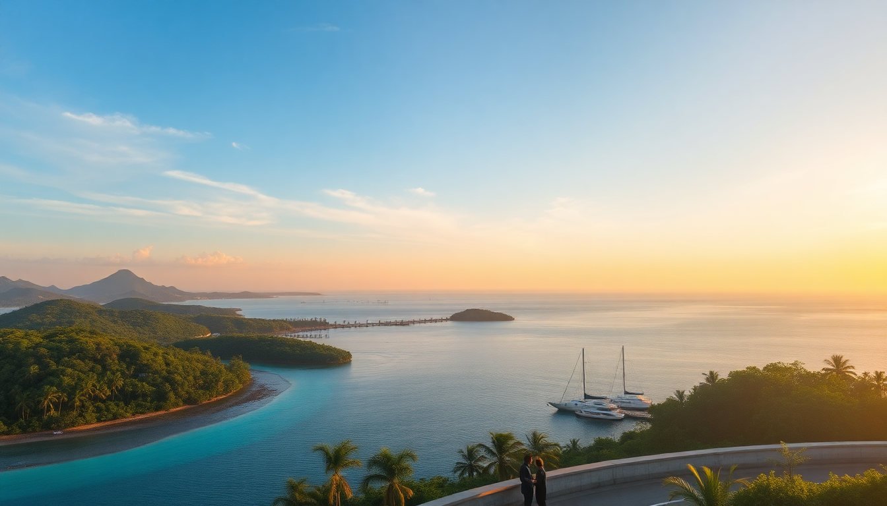

Best Day Trips from Malé: Atoll Hopping & Resort Visits

I landed in Malé with three full days before my overwater bungalow check-in, and quickly realized the real Maldives isn't just one resort island. The atolls around the capital are packed with sandbanks, local fishing villages, and day-access resorts that most tourists skip. Here’s how to actually do day trips from Malé without wasting time or overpaying for speedboat transfers.
What are the best day trips from Malé for first-timers?
The most practical first trip is a sandbank hop in the South Male Atoll. You leave Malé’s Villingili Ferry Terminal by 8 a.m. on a public ferry (1.5 hours, $3 per person) to Maafushi island. From Maafushi, local dhoni boats run 20-minute trips to Gulhi Falhu sandbank — a strip of white sand that only appears at low tide. We spent four hours there with just a cooler of tuna sandwiches and reef shoes.
If you want resort access without an overnight booking, Kurumba Maldives in North Male Atoll offers a day-pass program. Call their reception 24 hours ahead; they charged us $85 per adult in peak season, which included lunch buffet and use of the pool. The speedboat from Malé’s jetty takes 10 minutes. The reef snorkeling there is decent — I saw two turtles and a reef shark within 30 meters of the beach.
- South Male Atoll sandbanks: Gulhi Falhu, Biyadoo sandbank — public ferry to Maafushi first
- Resort day pass: Kurumba Maldives ($85–$120, includes lunch)
- Local island lunch: Maafushi’s Kaage Restaurant for mas huni and fresh tuna curry ($8 per person)
- Snorkel spot: Cocoa Island house reef (accessible via day pass from Maafushi dhonis)
How do you actually get around the atolls without a resort booking?
The public ferry network is the backbone of affordable atoll hopping. The MTCC ferry runs scheduled routes from Malé to Thulusdhoo (North Male Atoll), Maafushi (South Male Atoll), and Hulhumalé (connected by bridge). Fares range $2–$5 per person. Timetables change monthly, so check the MTCC website or the board at Malé’s ferry terminal the night before.
Speedboat transfers are faster but pricey. Shared speedboats to Maafushi cost $25–$35 per person each way, while private charters to Ari Atoll run $300–$500. For a solo traveler on a budget, the public ferry to Rasdhoo (Ari Atoll) takes 3 hours but costs $4 — we did it round-trip for less than a single resort cocktail.
- Public ferry: Malé to Thulusdhoo (1 hour, $2), Malé to Maafushi (1.5 hours, $3), Malé to Rasdhoo (3 hours, $4)
- Speedboat: Malé to Maafushi ($25–$35 shared), Malé to Ari Atoll resorts ($300+ private)
- Bridge option: Malé to Hulhumalé via Sinamalé Bridge — free, walk or take a taxi ($5)
Can you visit Ari Atoll as a day trip from Malé?
Yes, but only if you’re willing to pay for a seaplane or a very early speedboat. Ari Atoll is 70–100 kilometers from Malé. The fastest way is a Trans Maldivian Airways seaplane — 25 minutes, $280–$350 per person round-trip. They fly from Malé’s seaplane terminal at Ibrahim Nasir International Airport. Book directly with the airline, not through a third party; we saved $60 by calling them.
Once in Ari Atoll, the Ukulhas island has a public beach and guesthouses that allow day visitors. We walked from the jetty to Ukulhas Beach — clean, no seaweed, and a local shop rented snorkel gear for $5. For a resort experience, Constance Moofushi offers a day pass for $150 per person, which includes a three-course lunch and non-motorized water sports. The house reef there is famous for manta rays between May and November.
- Seaplane: Trans Maldivian Airways, 25 minutes, $280–$350 round-trip
- Local island: Ukulhas — free beach access, snorkel rental $5, lunch at Malaa Restaurant ($12)
- Resort day pass: Constance Moofushi ($150, includes lunch and kayaks)
- Manta season: May to November, best visibility at Maaya Thila dive site
What are the best local islands for a half-day trip from Malé?
Hulhumalé is the easiest — it’s connected to Malé by the Sinamalé Bridge, a 10-minute taxi ride ($5). The artificial beach there is fine for swimming, but the real draw is Hulhumalé Central Park and the Hulhumalé Mosque (modern architecture, no entry fee). We grabbed fish buns at Bake n’ Brew for $2 and watched the sunset from the beach.
Thulusdhoo in North Male Atoll is a 1-hour public ferry ride. It’s famous for its surf break, Chickens, a left-hand reef break that works year-round. Non-surfers can visit the Coca-Cola factory tour (free, 20 minutes, they give you a cold can at the end). The island’s Thulusdhoo Bikini Beach is a designated area for tourists to swim in swimwear — local island rules require covering up elsewhere.
- Hulhumalé: 10 minutes by taxi, free beaches, Bake n’ Brew for snacks
- Thulusdhoo: 1 hour ferry, Chickens surf break, free factory tour, Bikini Beach
- Maafushi: 1.5 hours ferry, Maafushi Prison Museum ($3, quirky history), Sand Bank Restaurant for grilled reef fish ($15)
When is the best time to do day trips from Malé?
The dry northeast monsoon (December to April) is ideal — calm seas, clear skies, and reliable ferry schedules. We did all our trips in February and never had a ferry canceled. The wet southwest monsoon (May to November) brings rain and stronger currents, but also cheaper day passes and fewer crowds. Avoid August and September if you’re prone to seasickness; the channel between Malé and Ari Atoll gets rough.
Ferries run less frequently on Fridays (the Islamic holy day). Check the MTCC Friday schedule — many routes stop by 11 a.m. Speedboat operators still run, but expect a 20% surcharge.
- Best months: December to April — calm seas, sunny
- Shoulder months: May and November — cheaper passes, occasional rain
- Avoid: August and September for rough seas; Fridays for limited ferry service
FAQ
Can you visit a resort for the day without staying overnight? Yes. Many resorts in Male Atoll and Ari Atoll sell day passes. Kurumba Maldives and Constance Moofushi are reliable options. Call or email 24 hours in advance. Prices range $85–$150 per adult, usually including lunch and pool access. Some require a minimum of two guests.
Do I need a visa to do day trips from Malé? No. All nationalities get a free 30-day visa on arrival at Malé International Airport. Day trips within the atolls don’t require additional permits. Just carry your passport copy for the ferry ticket counter.
What should I pack for a day trip in the atolls? Reef-safe sunscreen (most resorts ban chemical sunscreens), a dry bag, reef shoes (coral cuts hurt), cash in Maldivian rufiyaa (ferries and local restaurants don’t take cards), and a sarong for covering shoulders and knees on local islands. No alcohol allowed on public ferries or local islands.
Conclusion
- Start with a sandbank trip via Maafushi — cheapest way to see that classic Maldives water.
- Use public ferries for budget travel; speedboats only for time-crunched resort day passes.
- Hulhumalé is the best half-day option if you’re short on time or jet-lagged.
- Ari Atoll is doable in a day, but only if you budget $300+ for seaplane or private speedboat.
- Book resort day passes directly — third-party sites add 30% markup for no added value.